レインボーブリッジ（約430m／徒歩6分）
LOCATION
穏やかな海辺から
広がる日々
穏やかな海辺に安らぎながら、
煌めく都心の恵みを思いのままに
味わい尽くす日々。
普段の日も特別な日も充実する
羨望のロケーションがここにあります。
美しく整備された公園や遊歩道で、
心が解き放たれる時間。
芝浦南ふ頭公園（約480m／徒歩6分）
都市の余韻の中で、
海と空を感じるシーサイドへ。
芝浦南ふ頭公園（約480m／徒歩6分）
JR「田町」駅周辺にも、
美しい景観が広がる。
-
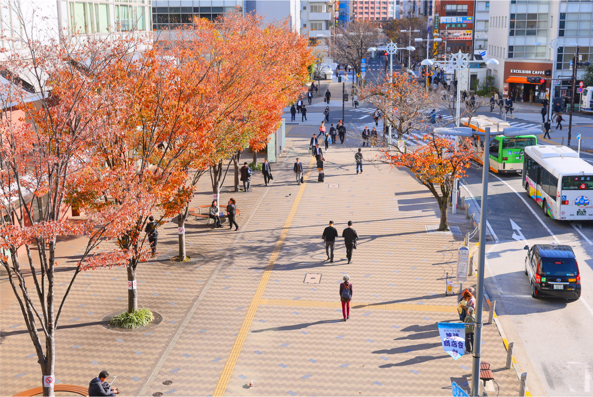
田町なぎさ通り（約920m／徒歩12分）
-
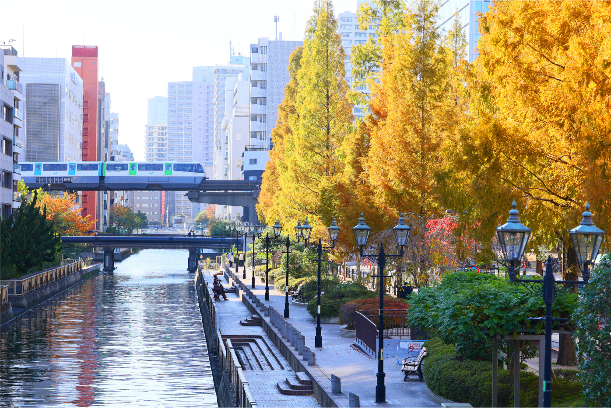
芝浦運河緑地（約280m／徒歩4分）
左：田町なぎさ通り（約920m／徒歩12分）
右：芝浦運河緑地（約280m／徒歩4分）
再開発で生まれ変わった駅前や運河のほとりに、美しく整備された景観が広がる芝浦エリア。
街としての高い志が、ここに住む喜びを深めてくれます。
暮らしを満たし、
心を潤す住環境。
住まいの周辺には、再開発で誕生した複合ビルを中心に、
暮らしに欠かせない店舗や飲食店などが充実。
日常のちょっとした憩いの場となる公園も身近に揃っています。
msb Tamachi
（約1,020m／徒歩13分）
-
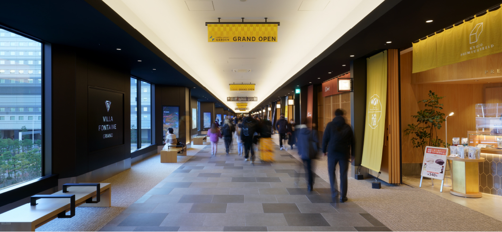
スーパーや多彩な飲食店が一堂に。
JR「田町」駅につながる２つのタワーの低層階には、スーパーマーケットのライフをはじめ、和洋中の多彩な飲食店が充実しています。
-
芝浦公園
（約1,020m／徒歩13分）
-
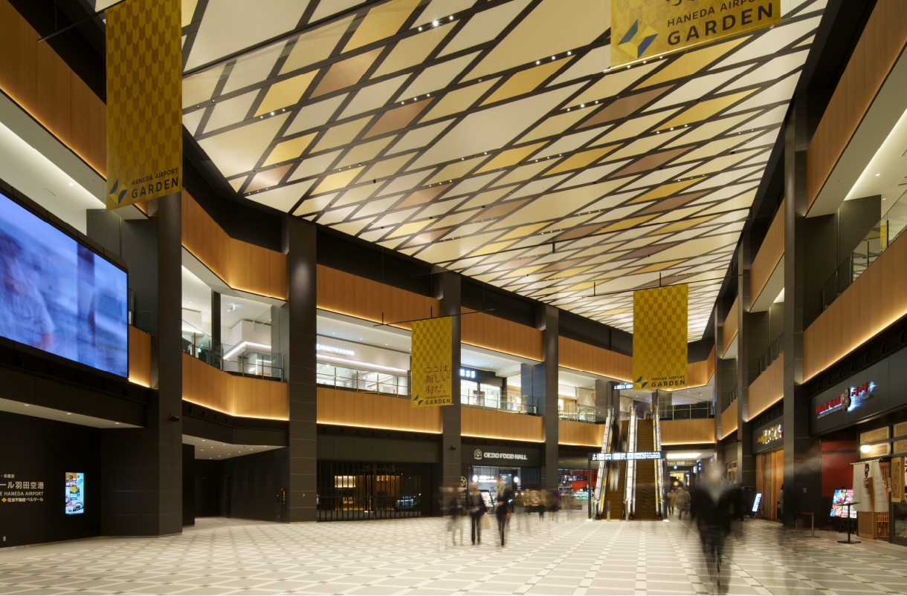
-
運河のある癒しの空間。
のんびりと寛げる美しい芝生の広場を中心に、子どもたちがのびのびと遊べる遊具が配置されています。
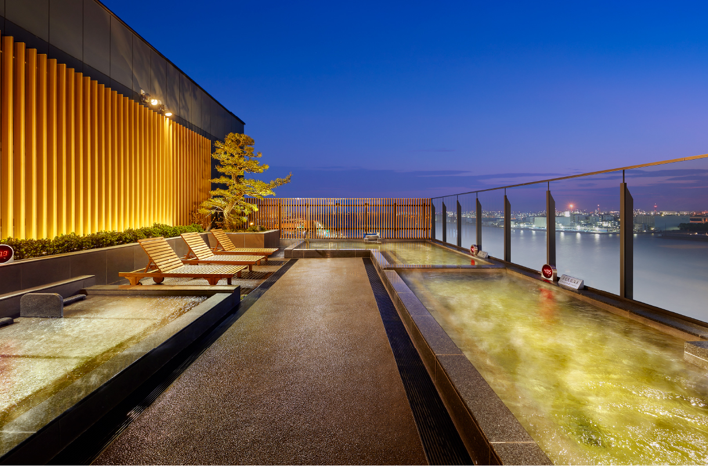
愛育病院を中心に、
医療施設も身近に充実。
芝浦クリニックや東京港診療所など、かかりつけ医として利用しやすいクリニックが身近です。
産婦人科や小児科を中心に質の高い医療を提供し続ける愛育病院もすぐそばに。
-
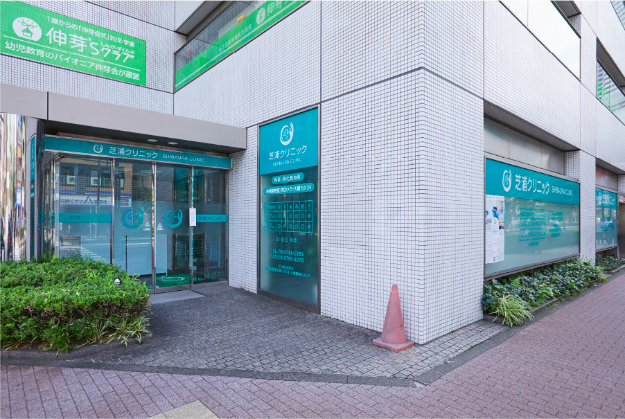
芝浦クリニック（約710m／徒歩9分）
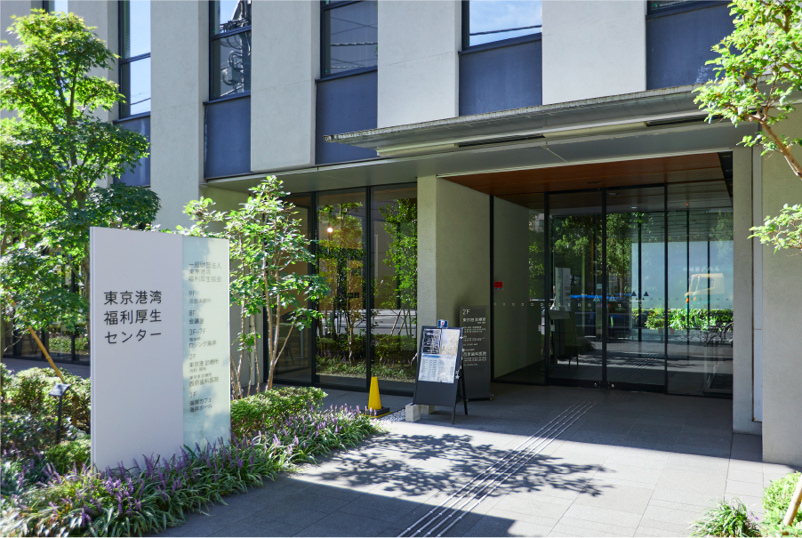東京港診療所（約160m／徒歩2分）
-
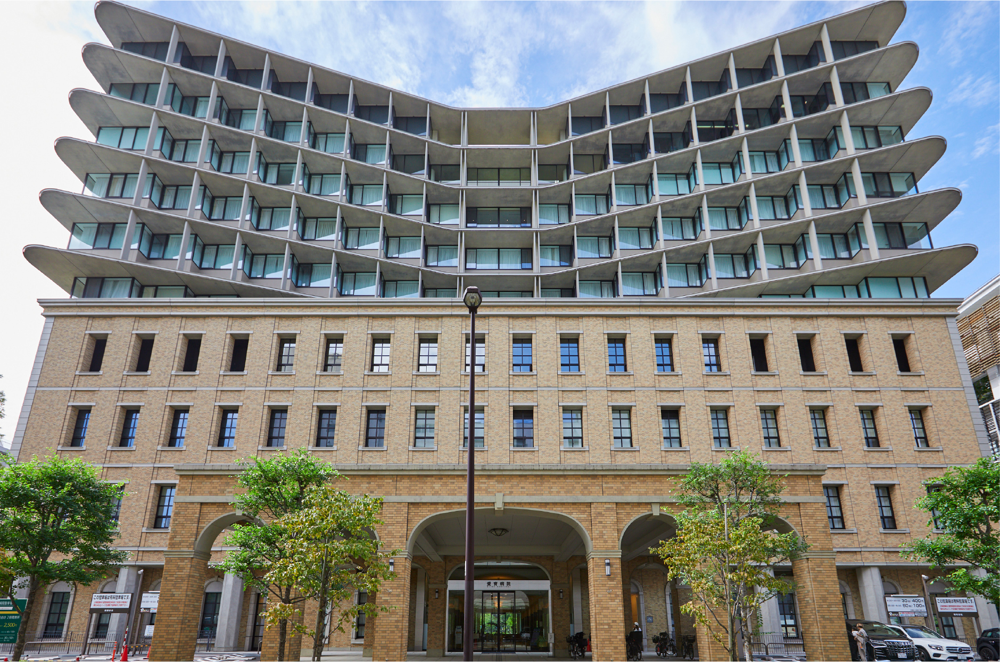
愛育病院（約1,140m／徒歩15分）
芝浦クリニック
（約710m／徒歩9分）東京港診療所
（約160m／徒歩2分）
ツキ シュール ラメール
（約1,670m／徒歩21分）
GOURMET
口福のひとときを演出する、
上質な食卓を、
いつもの場所に。
-
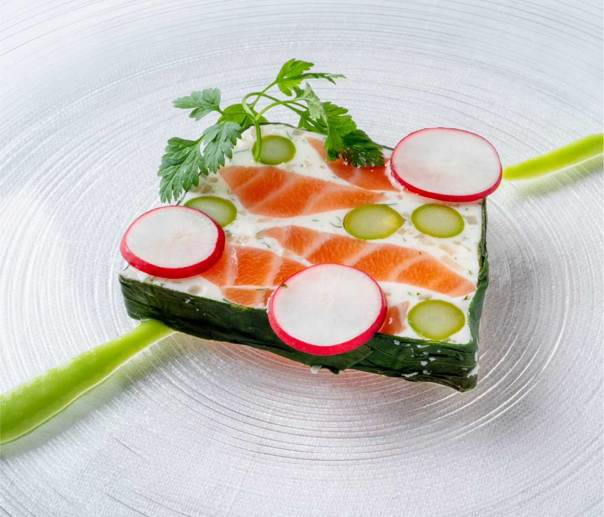
提供写真
［フレンチ・江戸前寿司］
ツキ シュール ラメール （約1,670m／徒歩21分）
フレンチと鮨の２軒が共演する、
海辺の一軒家レストラン。 -
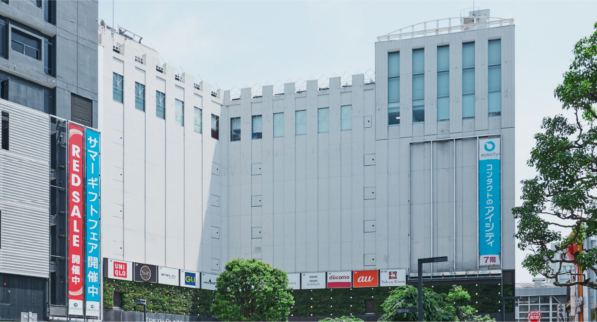
提供写真
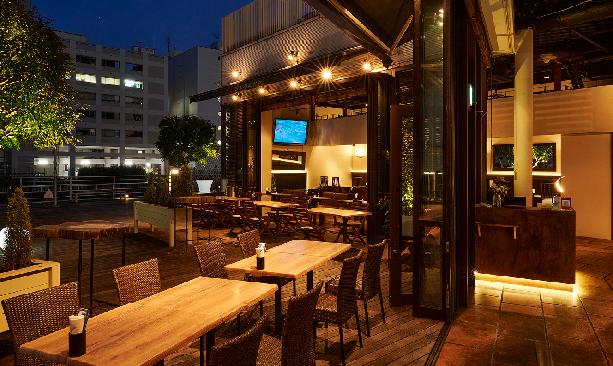提供写真
［リゾートダイニング］
BAGUS BAR Shibaura Island （約440m／徒歩6分）
運河に臨むオープンテラスで味わう、
イタリアン、フレンチをベースにした創作料理。 -
提供写真
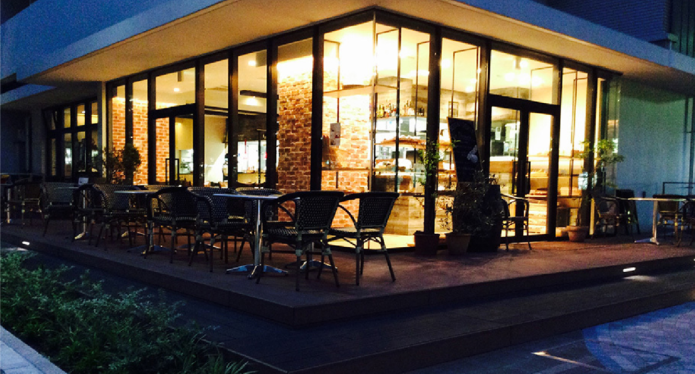提供写真
［フレンチ・パン工房］
ビストロ ア ラ ドゥマンド （約960m／徒歩12分）
心のこもったフランス料理と
美味しいパンに出逢えるビストロ。 -
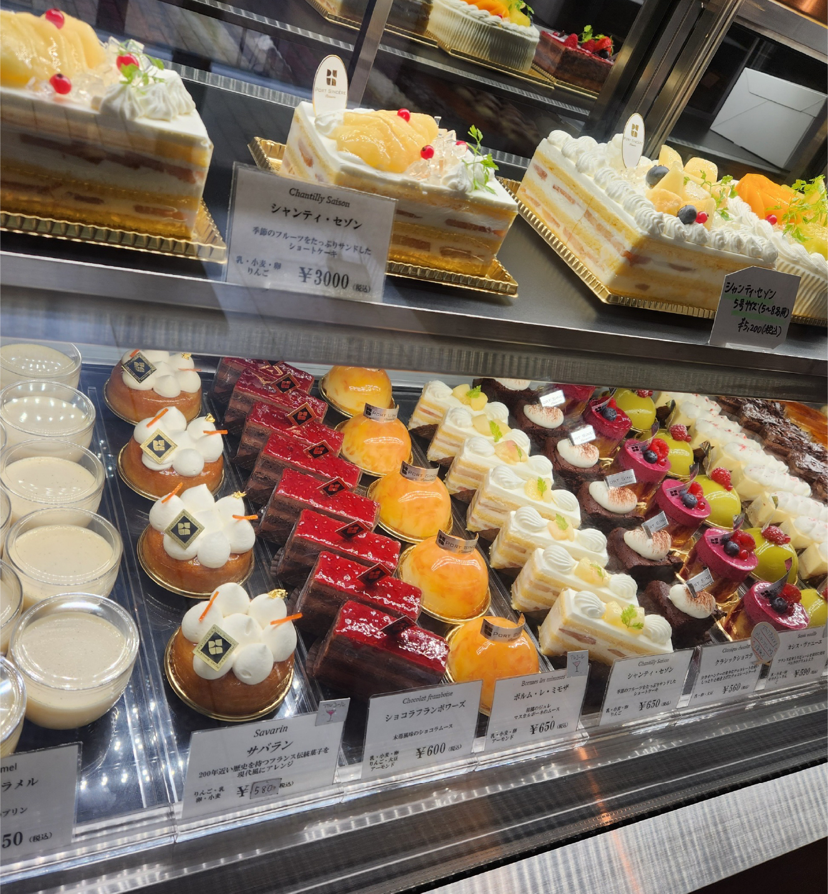
提供写真
［フランス菓子］
Ptisserie PORT SINCERE （約860m／徒歩11分）
どこかほっとした気分を誘う、
四季折々のフランス菓子。 -
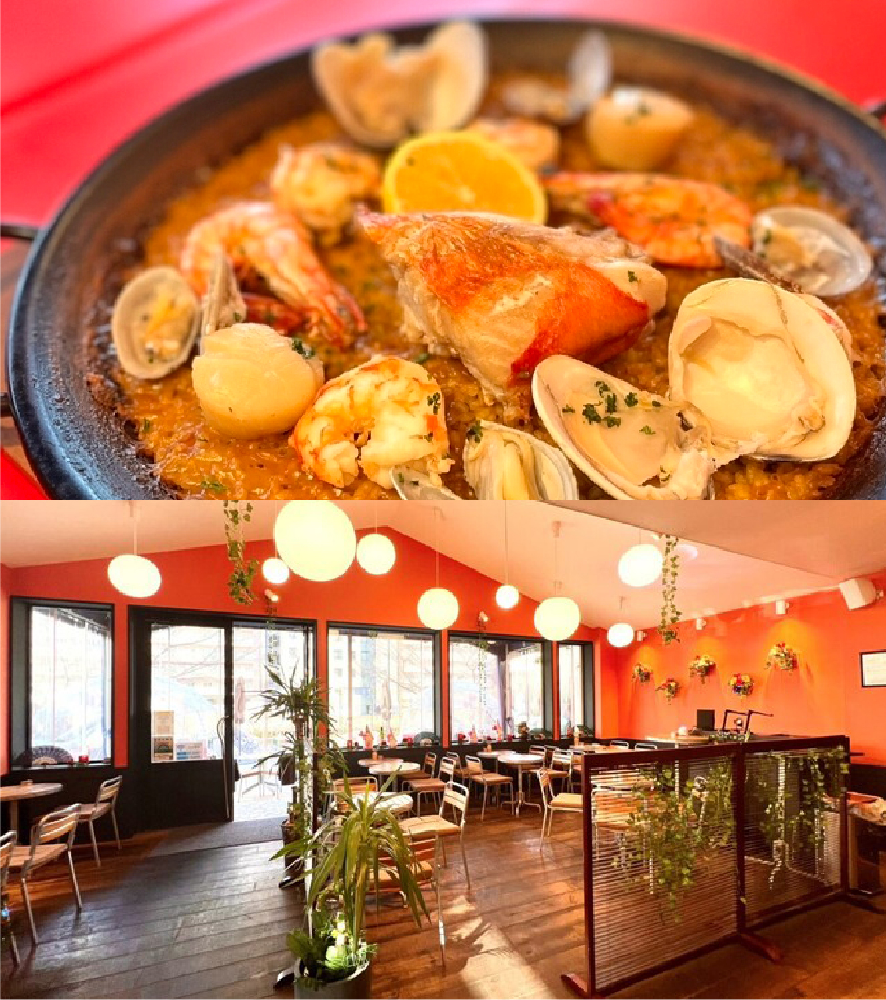
提供写真
［中南米レストラン］
Mi tiempo （約880m／徒歩11分）
南米発のチョリパンを味わえる、
運河のほとりのお洒落な隠れ家。 -
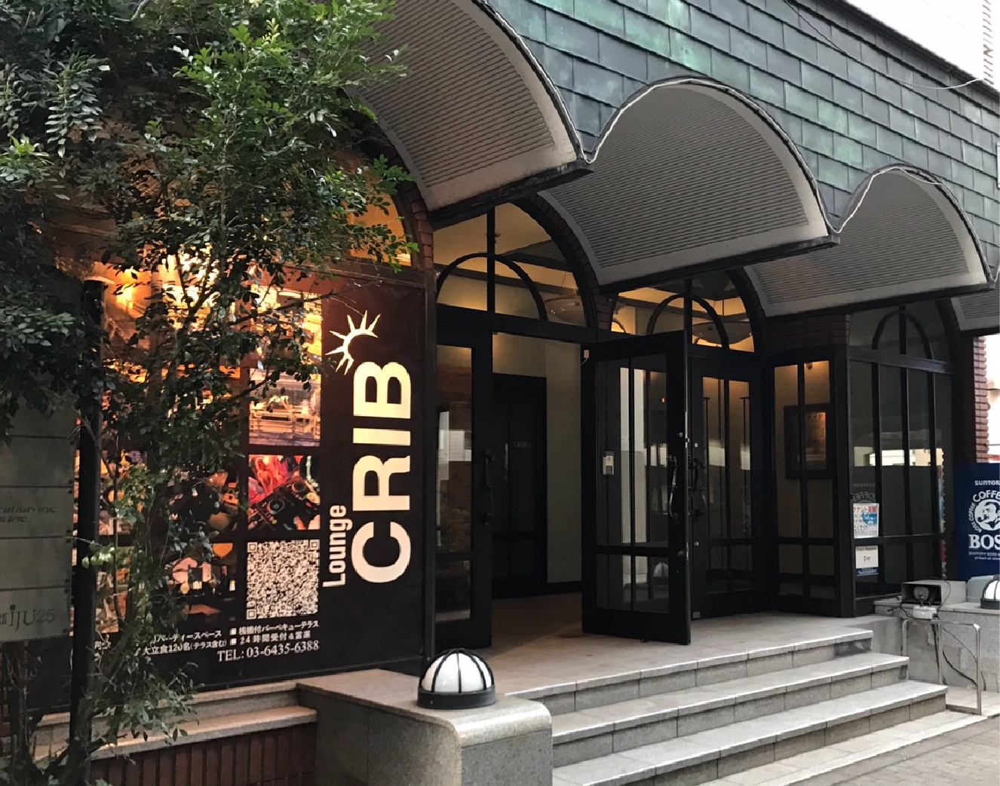
提供写真
［バーベキューレストラン］
Lounge CRIB （約1,240m／徒歩16分）
水辺の開放感を感じながら手ぶらでBBQが楽しめる。
店舗テラスから発着できるクルーズの手配も可能。
LIFE INFORMATION
※1.都営三田線・浅草線「三田」駅A7出口徒歩19分。公園ルートの場合（イベント実施時除く）であり、公道ルートの場合はA4出口徒歩22分。
※掲載の距離表示については地図上の概測距離を、徒歩分数表示については80mを１分として算出し、端数を切り上げたものです。
※掲載の環境写真は2023年12月に撮影。
※店舗・施設の内容等は将来変わる場合があります。
※掲載の情報は2023年12月現在のものです。